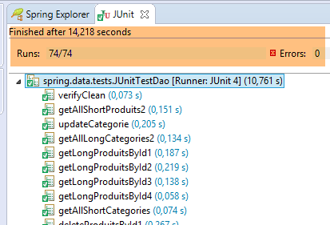
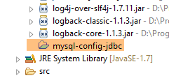
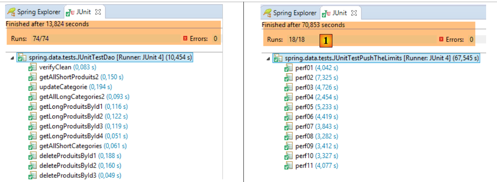

7. Spring Data JPA EclipseLink
7.1. Einleitung
Wir greifen auf die vorherige Architektur zurück, die wir nun mit einer Schicht JPA / EclipseLink implementieren.
 |
7.2. Einrichtung der Arbeitsumgebung
Laden Sie mit STS das Projekt [myql-config-jpa-hibernate] [1-4] herunter:
 |
und importieren Sie anschließend das Projekt [mysl-config-jpa-eclipselink] [5], das sich im Ordner [<exemples>/spring-database-config/mysql/eclipse] [6] befindet:
 |
Anschließend setzen Sie die Maven-Umgebung (Alt-F5) aller in [Package Explorer] enthaltenen Projekte zurück:
 |
Führen Sie anschließend zur Überprüfung der Arbeitsumgebung die Ausführungskonfiguration mit dem Namen [spring-jpa-generic-JUnitTestDao-hibernate-eclipselink] aus:
 |
Diese Konfiguration führt den Test [JUnitTestDao] aus. Dieser Test muss erfolgreich sein:
 |
7.3. Das Konfigurationsprojekt der Schicht JPA
 |
Dieses Projekt dient dazu, die Schicht JPA der folgenden Architektur zu konfigurieren:
 |
7.3.1. Maven-Konfiguration
Das Projekt ist ein Maven-Projekt und wird durch die folgende Datei [pom.xml] konfiguriert:
<project xsi:schemaLocation="http://maven.apache.org/POM/4.0.0 http://maven.apache.org/xsd/maven-4.0.0.xsd"
xmlns="http://maven.apache.org/POM/4.0.0" xmlns:xsi="http://www.w3.org/2001/XMLSchema-instance">
<modelVersion>4.0.0</modelVersion>
<groupId>dvp.spring.database</groupId>
<artifactId>generic-config-jpa</artifactId>
<version>0.0.1-SNAPSHOT</version>
<name>configuration mysql openjpa</name>
<parent>
<groupId>org.springframework.boot</groupId>
<artifactId>spring-boot-starter-parent</artifactId>
<version>1.2.3.RELEASE</version>
</parent>
<dependencies>
<!-- Variable Abhängigkeiten ********************************************** -->
<!-- JPA-Anbieter -->
<dependency>
<groupId>org.eclipse.persistence</groupId>
<artifactId>eclipselink</artifactId>
<version>2.6.0</version>
</dependency>
<!-- Konstante Abhängigkeiten ********************************************** -->
<!-- Spring Data -->
<dependency>
<groupId>org.springframework.data</groupId>
<artifactId>spring-data-jpa</artifactId>
</dependency>
<!-- vererbte Konfiguration JDBC -->
<dependency>
<groupId>dvp.spring.database</groupId>
<artifactId>generic-config-jdbc</artifactId>
<version>0.0.1-SNAPSHOT</version>
<exclusions>
<exclusion>
<groupId>org.springframework.boot</groupId>
<artifactId>spring-boot-starter-jdbc</artifactId>
</exclusion>
</exclusions>
</dependency>
</dependencies>
<properties>
<project.build.sourceEncoding>UTF-8</project.build.sourceEncoding>
<java.version>1.7</java.version>
</properties>
<build>
<plugins>
<!-- [https://flexguse.wordpress.com/2013/08/10/maven-spring-data-jpa-eclipselink-and-static-weaving/] -->
<plugin>
<groupId>org.apache.maven.plugins</groupId>
<artifactId>maven-surefire-plugin</artifactId>
<version>2.18.1</version>
</plugin>
<!-- Dieses Plugin sorgt für das statische Weben von EclipseLink -->
<plugin>
<artifactId>staticweave-maven-plugin</artifactId>
<groupId>de.empulse.eclipselink</groupId>
<version>1.0.0</version>
<executions>
<execution>
<goals>
<goal>weave</goal>
</goals>
<phase>process-classes</phase>
<configuration>
<logLevel>ALL</logLevel>
<!-- <includeProjectClasspath>true</includeProjectClasspath> -->
</configuration>
</execution>
</executions>
<dependencies>
<dependency>
<groupId>org.eclipse.persistence</groupId>
<artifactId>eclipselink</artifactId>
<version>2.6.0</version>
</dependency>
</dependencies>
</plugin>
</plugins>
<pluginManagement>
<plugins>
<!--Die Konfiguration dieses Plugins dient ausschließlich zur Speicherung der Eclipse-m2e-Einstellungen. Sie hat keinen Einfluss auf den Maven-Build selbst. -->
<plugin>
<groupId>org.eclipse.m2e</groupId>
<artifactId>lifecycle-mapping</artifactId>
<version>1.0.0</version>
<configuration>
<lifecycleMappingMetadata>
<pluginExecutions>
<pluginExecution>
<pluginExecutionFilter>
<groupId>
de.empulse.eclipselink
</groupId>
<artifactId>
staticweave-maven-plugin
</artifactId>
<versionRange>
[1.0.0,)
</versionRange>
<goals>
<goal>weave</goal>
</goals>
</pluginExecutionFilter>
<action>
<execute>
<runOnIncremental>true</runOnIncremental>
</execute>
</action>
</pluginExecution>
</pluginExecutions>
</lifecycleMappingMetadata>
</configuration>
</plugin>
</plugins>
</pluginManagement>
</build>
</project>
- Zeilen 5–7: Das von diesem Projekt generierte Maven-Artefakt. Es ist dasselbe wie das des Projekts [mysql-config-jpa-hibernate]. Das bedeutet, dass zu einem bestimmten Zeitpunkt nur eines dieser Projekte aktiv sein kann;
- Zeilen 10–14: das übergeordnete Maven-Projekt, das die Version der meisten für das Projekt erforderlichen Abhängigkeiten festlegt;
- Zeilen 19–22: die Bibliothek EclipseLink;
- Zeilen 26–29: die Spring-Data-Bibliothek;
- Zeilen 32–34: Das Konfigurationsprojekt der Schicht JPA stützt sich auf das Konfigurationsprojekt der Schicht JDBC, das unter anderem den Treiber JDBC für das verwendete SGBD sowie die Koordinaten der zu verwendenden Datenbank definiert;
- Zeilen 35–40: Der Konfigurationsentwurf der Ebene JDBC enthält die Bibliothek [Spring JDBC], die hier durch die Bibliothek [Spring Data JPA] ersetzt wird. Daher wird empfohlen, sie nicht in die Projektabhängigkeiten aufzunehmen. Bleibt sie dennoch enthalten, führt dies jedoch nicht zu Fehlern;
- Das Plugin in den Zeilen 58–81 implementiert die Entität „weaving“ aus den Entitäten JPA. Was die Angelsachsen als „weaving“ bezeichnen, ist die Transformation (Anreicherung) der Entitäten „JPA“, damit diese Lazy Loading unterstützen. Wir mussten Hibernate nicht konfigurieren, damit dieses weaving funktioniert. Für EclipseLink ist ein Maven-Plugin erforderlich. Ich habe sehr lange nach einer Möglichkeit gesucht, EclipseLink dazu zu zwingen, das Attribut [fetch = FetchType.LAZY] der unten stehenden Annotation [@ManyToOne] zu beachten:
@ManyToOne(fetch = FetchType.LAZY)
@JoinColumn(name = ConfigJdbc.TAB_PRODUITS_CATEGORIE_ID)
private Categorie categorie;
Die Spezifikation JPA besagt, dass das Attribut [fetch = FetchType.LAZY] der Annotation [@ManyToOne] ein „Hinweis“ (Hinweis), den die Implementierung JPA nicht befolgen muss. Und tatsächlich befolgt EclipseLink diesen Hinweis standardmäßig nicht. Es ist eine spezielle Konfiguration erforderlich, damit er befolgt wird. Nach langem erfolglosem Suchen habe ich die Lösung für das in Zeile 51 erwähnte URL gefunden. Wenn man die Zeilen 58–81 in die Datei [pom.xml] einfügt, meldet Eclipse einen Fehler bezüglich dieser Datei. Es handelt sich um ein Konfigurationsproblem des Plugins [m2e], das die Verwaltung von Maven-Projekten in Eclipse übernimmt. Man muss die Zeilen 83–119 hinzufügen, um den Fehler zu beheben.
Letztendlich lauten die Abhängigkeiten wie folgt:
 |
7.3.2. Spring-Konfiguration
 |
Die Klasse [ConfigJpa] konfiguriert das Spring-Projekt:
package generic.jpa.config;
import generic.jdbc.config.ConfigJdbc;
import javax.persistence.EntityManagerFactory;
import org.apache.tomcat.jdbc.pool.DataSource;
import org.springframework.context.annotation.Bean;
import org.springframework.context.annotation.Configuration;
import org.springframework.context.annotation.Import;
import org.springframework.orm.jpa.JpaTransactionManager;
import org.springframework.orm.jpa.JpaVendorAdapter;
import org.springframework.orm.jpa.LocalContainerEntityManagerFactoryBean;
import org.springframework.orm.jpa.vendor.Database;
import org.springframework.orm.jpa.vendor.EclipseLinkJpaVendorAdapter;
import org.springframework.transaction.PlatformTransactionManager;
@Configuration
@Import({ ConfigJdbc.class })
public class ConfigJpa {
// der Provider JPA
@Bean
public JpaVendorAdapter jpaVendorAdapter() {
// Hinweis: Die Entitäten JPA und die EclipseLink-Konfiguration befinden sich in der Datei META-INF/persistence.xml
EclipseLinkJpaVendorAdapter eclipseLinkJpaVendorAdapter = new EclipseLinkJpaVendorAdapter();
eclipseLinkJpaVendorAdapter.setShowSql(false);
eclipseLinkJpaVendorAdapter.setDatabase(Database.MYSQL);
eclipseLinkJpaVendorAdapter.setGenerateDdl(true);
return eclipseLinkJpaVendorAdapter;
}
// Datenquelle
@Bean
public DataSource dataSource() {
// Datenquelle TomcatJdbc
DataSource dataSource = new DataSource();
// Zugriffskonfiguration JDBC
dataSource.setDriverClassName(ConfigJdbc.DRIVER_CLASSNAME);
dataSource.setUsername(ConfigJdbc.USER_DBPRODUITSCATEGORIES);
dataSource.setPassword(ConfigJdbc.PASSWD_DBPRODUITSCATEGORIES);
dataSource.setUrl(ConfigJdbc.URL_DBPRODUITSCATEGORIES);
// anfänglich offene Verbindungen
dataSource.setInitialSize(5);
// Ergebnis
return dataSource;
}
// EntityManagerFactory
@Bean
public EntityManagerFactory entityManagerFactory(JpaVendorAdapter jpaVendorAdapter, DataSource dataSource) {
LocalContainerEntityManagerFactoryBean factory = new LocalContainerEntityManagerFactoryBean();
factory.setJpaVendorAdapter(jpaVendorAdapter);
factory.setDataSource(dataSource);
factory.afterPropertiesSet();
EntityManagerFactory entityManagerFactory = factory.getObject();
return entityManagerFactory;
}
// Transaktionsmanager
@Bean
public PlatformTransactionManager transactionManager(EntityManagerFactory entityManagerFactory) {
JpaTransactionManager txManager = new JpaTransactionManager();
txManager.setEntityManagerFactory(entityManagerFactory);
return txManager;
}
}
Diese Konfiguration entspricht der in Abschnitt 6.3.2 beschriebenen für die Hibernate-Implementierung JPA. Wir gehen hier nur auf die Unterschiede ein:
- Zeilen 23–31: Die Bean [jpaVendorAdapter] wird nun mit EclipseLink implementiert;
- Zeilen 50–58: In der Hibernate-Version JPA lautete der Code:
, womit angegeben wurde, wo nach den Entitäten JPA gesucht werden sollte. Hier wird auf die Datei [persistence.xml] (Kommentar in Zeile 25) (siehe Abschnitt 6.3.4) zurückgegriffen, um sowohl:
- die Entitäten JPA zu definieren;
- EclipseLink für das weaving dieser Entitäten zu konfigurieren;
7.4. Die Datei [persistence.xml]
 |
<?xml version="1.0" encoding="UTF-8"?>
<persistence version="1.0" xmlns="http://java.sun.com/xml/ns/persistence" xmlns:xsi="http://www.w3.org/2001/XMLSchema-instance"
xsi:schemaLocation="http://java.sun.com/xml/ns/persistence http://java.sun.com/xml/ns/persistence/persistence_1_0.xsd">
<persistence-unit name="generic-jpa-entities-dbproduitscategories" transaction-type="RESOURCE_LOCAL">
<!-- Entitäten JPA -->
<class>generic.jpa.entities.dbproduitscategories.Categorie</class>
<class>generic.jpa.entities.dbproduitscategories.Produit</class>
<class>generic.jpa.entities.dbproduitscategories.User</class>
<class>generic.jpa.entities.dbproduitscategories.Role</class>
<class>generic.jpa.entities.dbproduitscategories.UserRole</class>
<exclude-unlisted-classes>true</exclude-unlisted-classes>
<!-- Erforderliche Eigenschaften, damit [@ManyToOne] im Modus LAZY gesucht werden kann -->
<properties>
<property name="eclipselink.weaving" value="static" />
<property name="eclipselink.weaving.lazy" value="true" />
<property name="eclipselink.weaving.internal" value="true" />
</properties>
</persistence-unit>
</persistence>
- Zeile 4: die Persistenz-Einheit. Sie kann einen beliebigen Namen tragen (Attribut name);
- Zeilen 6–10: die fünf zu verwaltenden Entitäten JPA;
- Zeile 11 ist wichtig. Es kommt manchmal vor, dass ein Projekt Entitäten definiert, die in verschiedenen Kontexten verwendet werden. Zeile 11 stellt sicher, dass keine anderen Entitäten als die in den Zeilen 5–10 definierten vorhanden sind. Dies ist wichtig, wenn diese zur Generierung der Tabellen der Datenquelle verwendet werden. Zu viele Entitäten würden zu vielen überflüssigen Tabellen führen;
- Zeilen 13–17: Konfiguration von EclipseLink für ein statisches weaving. Es gibt zwei Arten von weaving:
- [statique]: Die Entitäten JPA werden „gewoben“ (woven), sobald die Schicht JPA instanziiert wird;
- [dynamique]: Die Entitäten JPA werden beim ersten Eintritt in die Schicht JPA angereichert (woven);
7.5. Die Entitäten JPA
 |
Die Entitäten JPA entsprechen den in Abschnitt 6.3.3 für die Hibernate-Implementierung beschriebenen, mit zwei Unterschieden:
- Alle Entitäten JPA tragen die Annotation [@Cache(alwaysRefresh = true)], die den Cache von EclipseLink deaktiviert. In diesem Dokument werden die Caches der verwendeten JPA-Implementierungen nicht genutzt. Der Cache von EclipseLink scheint standardmäßig aktiv zu sein und führte in den Tests zu Fehlern.
@Entity
@Table(name = ConfigJdbc.TAB_CATEGORIES)
@JsonFilter("jsonFilterCategorie")
@Cache(alwaysRefresh = true)
public class Categorie implements AbstractCoreEntity {
- Alle Annotationen [@OneToMany] werden von der Annotation [@CascadeOnDelete] begleitet:
@OneToMany(fetch = FetchType.LAZY, mappedBy = "categorie", cascade = { CascadeType.ALL })
@CascadeOnDelete
private List<Produit> produits;
Diese Anmerkung spielt bei der Generierung von Tabellen aus den Entitäten JPA eine Rolle. Sie fügt den Fremdschlüsseln (hier PRODUITS[CATEGORIE_ID] ---> CATEGORIES[ID]) das Attribut SQL [ON DELETE CASCADE] hinzu, wodurch jedes Mal, wenn eine Kategorie in der Tabelle [CATEGORIES] gelöscht wird, auch die entsprechenden Produkte in der Tabelle [PRODUITS] gelöscht werden;
Hinweis: Es ist wichtig zu beachten, dass diese Anmerkung sowohl bei der Erstellung der Tabelle, wie wir gerade gesehen haben, als auch bei deren Nutzung verwendet wird. EclipseLink setzt voraus, dass das Attribut SQL [ON DELETE CASCADE] vorhanden ist, und verwendet es jedes Mal, wenn es aufgefordert wird, eine Kategorie zu löschen. Fehlt es, würde dies zu Fehlern führen.
7.6. Die Testschicht
 |
 |
Die oben genannten Tests sind identisch mit denen der Spring-Implementierungen JDBC und der Spring-Hibernate-Implementierung JPA. Bei Bedarf siehe die folgenden Seiten:
- [JUnitTestCheckArguments]: Abschnitt 4.11.1;
- [JUnitTestDao]: Abschnitt 4.11.2;
- [JUnitTestPushTheLimits]: Abschnitt 4.11.3;
- [JUnitTestProxies]: Abschnitt 6.4.5;
Die erzielten Ergebnisse lauten wie folgt:
 |
 |
- in [1], [JUnitTestPushTheLimits-EclipseLink]: 70,583 s
- in [2], [JUnitTestPushTheLimits-Hibernate]: 78,945 s
- in [3], [JUnitTestPushTheLimits-JDBC]: 36,09 s
Der Test [JUnitTestProxies] liefert folgende Konsolenergebnisse:
Vidage de la base de données --------------------------------
doNothing
Vidage de la base de données --------------------------------
getShortCategoriesByName1 --------------------------------
Catégorie de type : PROXY
Catégorie :
1
Vidage de la base de données --------------------------------
getLongCategoriesByName1 --------------------------------
Catégorie de type : POJO
Catégorie :
1
Vidage de la base de données --------------------------------
getShortProduitsByName1 --------------------------------
Produit de type : PROXY
Nom de la catégorie du produit :
categorie[0]
Vidage de la base de données --------------------------------
getLongProduitsByName1 --------------------------------
Produit de type : POJO
Nom de la catégorie du produit :
categorie[0]
Hier ist zu sehen, dass beim Zugriff auf das Feld [Categorie.produits] einer Kategorie vom Typ PROXY und auf das Feld [Produit.categorie] eines Produkts vom Typ PROXY die Informationen in beiden Fällen erfolgreich abgerufen werden können (Zeilen 7 und 17). Von den drei Implementierungen JPA ist dies die einzige, die dies für die Entitäten PROXY ermöglicht.